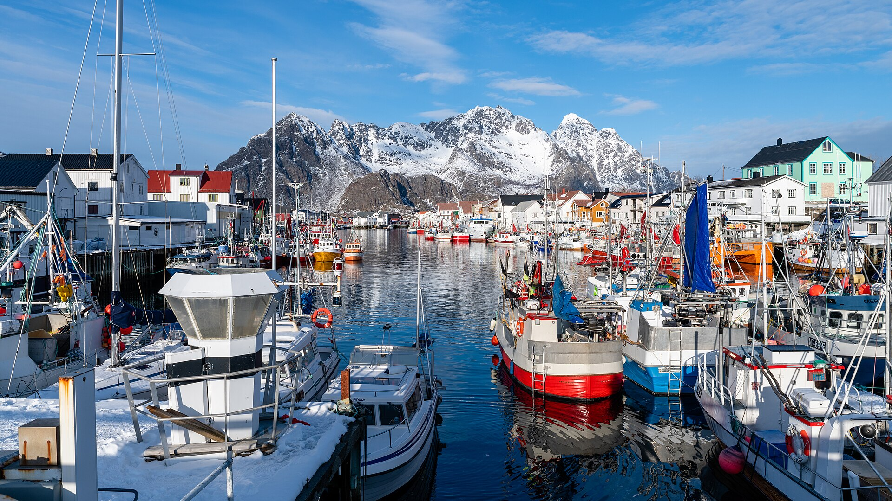
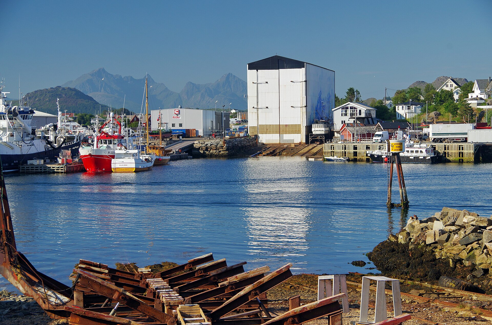
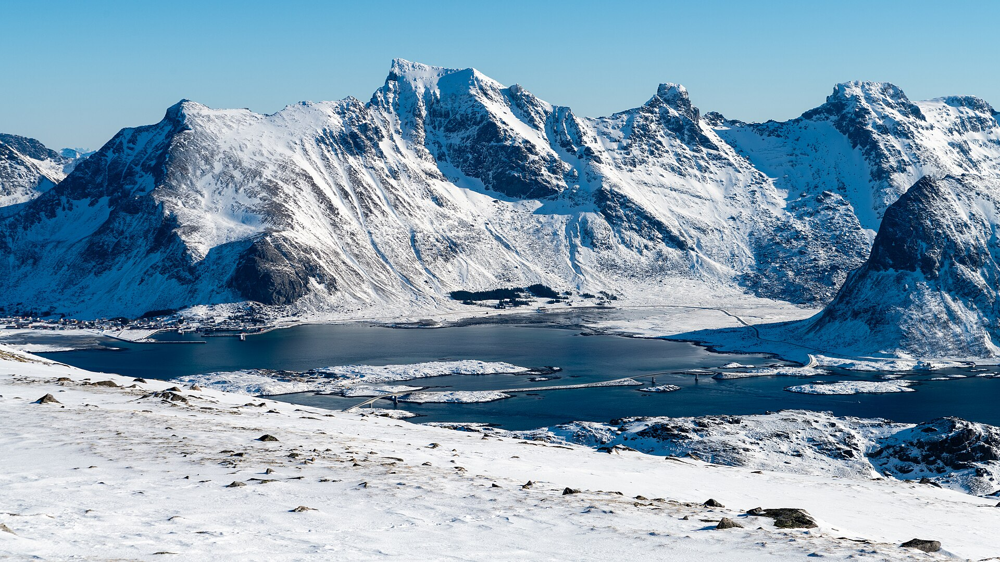
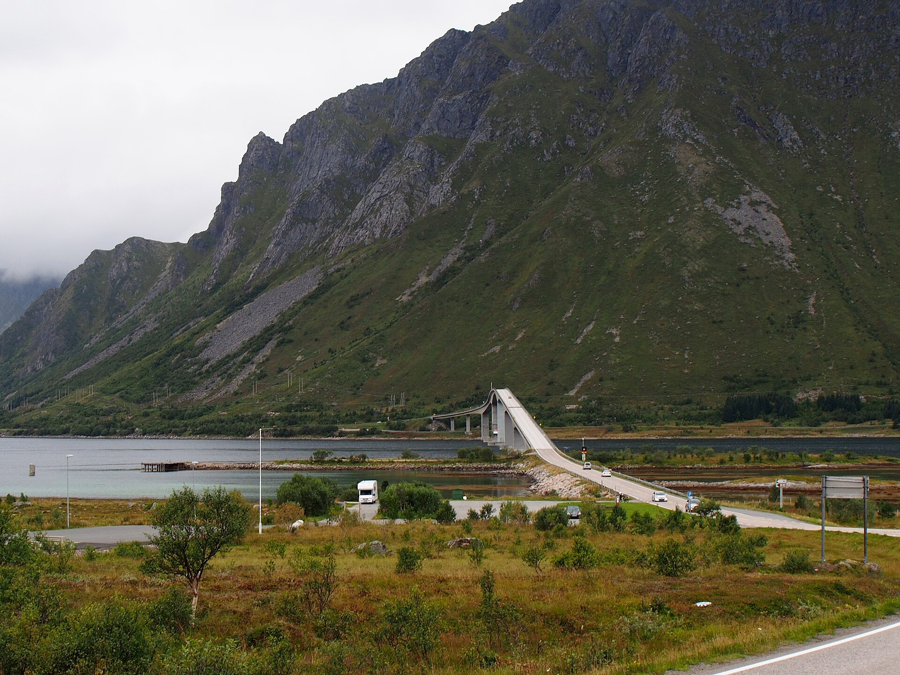
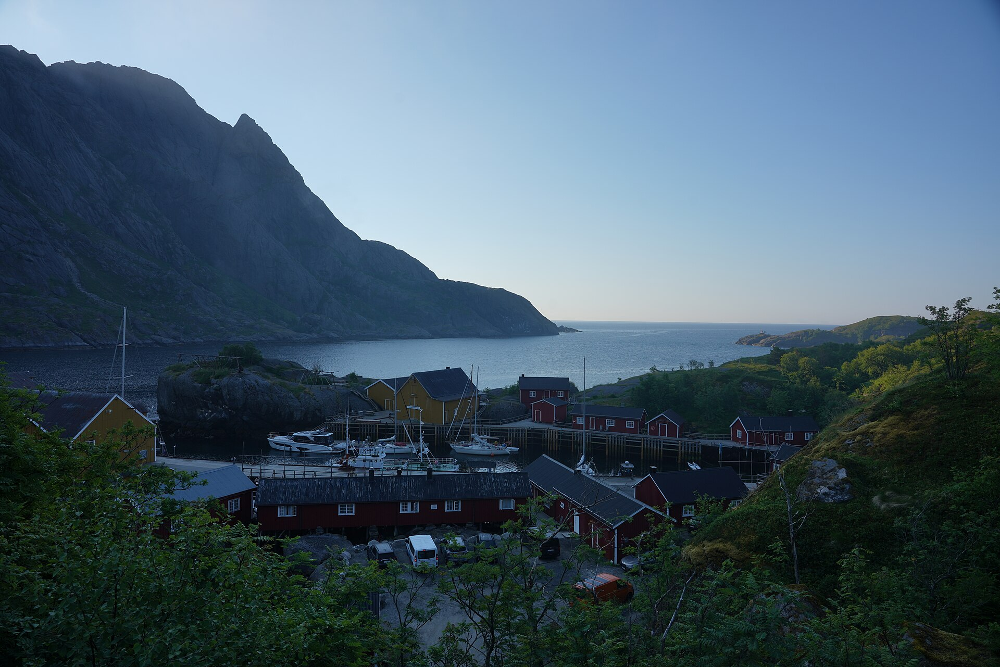

结论速览：7 条
只读这一段也能拿到全部判断。每条都能在下方章节找到完整论证与数据。
1. Unstad Arctic Resort 是全场唯一「无连住约束 + 天区 9.5 + 守光 1 分钟 + 2061 元」的候选
它的存在让 10/3、10/4 这两晚几乎没有争议：任何排法的前 25 名里，10/4 住 Unstad 的占了 16 条。 代价是它到西段 Reine 单程 1:18，10/4 白天要白跑一趟走廊。
2. 10/2 默认住 Henningsvær，是因为「落脚方便」而不是「极光好」
Henningsvær 到 EVE 3:10、有餐厅、渔村味最足 —— 但它北向被 Vågakallen（942 m）山墙挡死， 住地天区只有 4.5/10，必须开 8–12 min 到 Rørvikstranda 才开阔。 如果你的第一顺位是极光，10/2 更该考虑 Gimsøystraumen 的 Vei 2803 22（天区 7.5、到 EVE 3:07，全场最短）。 差的只是「渔村氛围」和 1485 元/晚 的差价。
3. 你只有 3 晚，而 5 个候选带硬性连住 / 可订限制
Misværveien 2 锁 10/3–10/4、Elvis Presleys vei 25 锁 10/2–10/3、Andopveien 35 只有 10/2， Fishermans Villa 与 Jusnesveien 55 必须连住两晚。把它们当「自由棋子」摆会直接排不出方案 —— 430 种组合里，只有一小部分合法。这就是为什么本报告要先做约束筛选、再做打分。
4. 「10/4 住西端」和「10/5 轻松返程」是同一笔账的两种付法
住 Unstad（北部）时：10/4 白天要开 2×78 min 走廊去西段，10/5 返 EVE 232 min（单程）。 住 Eliassen（西端）时：10/4 几乎零走廊（Reine 9 min），但 10/5 返 EVE 282 min。 住 Ramberg / Jusnesveien 55（中偏西）：10/4 走廊 2×31 min，10/5 返 260 min —— 总走廊最短的其实是 Ramberg / Jusnesveien 55 这一档（322 min），模型的「返程」维度把它低估了。
怎么读上面第 4 条：模型给「返程」的公式是 10 − (到 EVE 分钟 − 190) / 10，所以 Unstad（232 min）得 5.8、Ramberg（260 min）得 3.0、Eliassen（282 min）得 0.8。这个公式惩罚的是「离机场远」，但没有区分「10/5 有一整个白天」和「10/5 只有半天」。如果你打算 10/6 早上飞 EVE→OSL，10/5 是完整的一天，返程惩罚就该大幅调低 —— 这一点在第 6 节「返程方案分叉」里单独讨论。
5. 你要的「挪威特色住宅」+「落地窗海景」，在不换宿的前提下做不满
正宗 rorbu（红房子渔屋）在 Eliassen / Nusfjord / Hattvika / Fishermans Villa / Bryggehotell； 大落地窗海景在 Jusnesveien 55 / Andopveien 35 / Vei 2803 22 / Banhammaren 39。两组几乎不重合 —— 所以至少换一次宿才能在 3 晚里同时拿到。你的「不介意打包行李换宿」正好用得上。
6. 「24 小时内可退」= 灵活性最低，不是最高
它是指订房后 24 小时内可退、之后不可退。 Jusnesveien 55 就属于这一档 —— 下单后基本锁死。 它应该是「行程骨架定了之后的下单对象」，不是「先占坑再说」的对象。
7. 10/4 是月面最暗的一晚（46%），不该用搬家消耗掉
三晚月面照亮比例：10/2 ≈ 67%、10/3 ≈ 56%、10/4 ≈ 46%（下弦走向，逐夜变暗）。 模型里的月相修正系数 0.767 / 0.803 / 0.840 就是由它换算出来的 —— 数字越大代表月光干扰越小， 所以 10/4 拿到的权重最高。月亮的实际影响是压低暗弱极光的对比度， 但同时也把雪面/海面打亮、让长曝更好看 —— 所以「有月亮」不等于「看不到」，只是更需要开阔地平线、更需要避开山墙。 因此 10/4 这个天然最暗的夜晚，应当落在天区最开阔的住地，而不是落在搬家日。
12 个候选一览：价格、约束、天区、到各锚点的车程
全部车程为 OSRM 真实路网计算（_lodging12.txt），非直线距离。「天区」是住地自身看天空的开阔程度（0–10，人工判定，依据见第 3 节）。
| # | 住地 | 类型 | 单价 (元/晚) | 可订/连住约束 | 天区 | 守光 (min) | EVE | Svolvær | Leknes | Reine |
|---|---|---|---|---|---|---|---|---|---|---|
| 1 | Banhammaren 39 H0304 Banhammaren 39 H0304（Airbnb 公寓） | Airbnb 公寓 | 2407.85 | 无连住约束 | 4.5 | 12 | 3:11 | 0:31 | 1:07 | 2:03 |
| 2 | Misværveien 2 码头公寓 Misværveien 2（Airbnb 码头公寓） | Airbnb 码头公寓 | 1345.38 | 必须 10/3–10/5 连住两晚 | 4.5 | 8 | 3:09 | 0:27 | 1:04 | 2:00 |
| 3 | Henningsvær Bryggehotell Henningsvaer Bryggehotell（海景阁楼套房） | 精品酒店（海景阁楼 3186 元 / 豪华双人 2298 元） | 2297.93 | 无连住约束 | 4.5 | 9 | 3:09 | 0:27 | 1:03 | 1:59 |
| 4 | Hattvika Lodge – Hattvika Hillside Hattvika Lodge（Hattvika Hillside） | 罗弗敦传统渔屋旅馆 | 2664 | Hillside 无约束；Myklebustbua#2（1878 元）须连住 2 晚 | 6.5 | 18 | 4:05 | 1:27 | 0:15 | 1:08 |
| 5 | Fishermans Villa Ballstad Fishermans Villa Ballstad – Lofoten | 罗弗敦渔屋民宿 | 1917.5 | 必须连住两晚（10/2+10/3 或 10/3+10/4） | 6.5 | 17 | 4:03 | 1:24 | 0:12 | 1:05 |
| 6 | Jusnesveien 55 Jusnesveien 55（Airbnb 独栋，大落地窗海景） | Airbnb 大独栋（面积大 · 两屋可联通 · 大落地窗 · 山景+海景） | 2242.5 | 必须连住两晚（10/2+10/3 或 10/3+10/4） | 8.0 | 3 | 4:20 | 1:41 | 0:32 | 0:31 |
| 7 | Oceanview Mini-House – Stunning Views Oceanview Mini-House – Stunning Views | Airbnb 迷你独栋 | 2243 | 只能订到 10/2 一晚 | 8.5 | 0 | 4:21 | 1:42 | 0:31 | 0:28 |
| 8 | Varanes – Elvis Presleys vei 25 Varanes – 乡村全新小木屋（Airbnb） | Airbnb 全新乡村小木屋 | 3220.07 | 必须连住 10/2+10/3 两晚 | 8.0 | 3 | 4:20 | 1:41 | 0:32 | 0:31 |
| 9 | Arctic Panoramautsikten（Vei 2803 22） Arctic Panoramautsikten Lofoten（带按摩浴缸） | Airbnb 全景公寓（带按摩浴缸） | 3783.34 | 无连住约束 | 7.5 | 6 | 3:06 | 0:24 | 0:53 | 1:49 |
| 10 | Unstad Arctic Resort（山景公寓） Unstad Arctic Resort（山景公寓） | 北极冲浪度假村公寓 | 2061 | 无连住约束 | 9.5 | 1 | 3:52 | 1:06 | 0:23 | 1:18 |
| 11 | Eliassen Rorbuer Eliassen Rorbuer（一室公寓 / 滨水高级一卧） | 罗弗敦最经典的红房子渔屋 | 1959 | 10/4 房型多（一室 1959 元）；10/2 一室 2576 元；10/3 仅传统两卧 2963 元 | 8.0 | 2 | 4:42 | 2:02 | 0:55 | 0:09 |
| 12 | Nusfjord Village & Resort Nusfjord Village & Resort | 历史渔村度假村 | 2300 | 无连住约束 | 4.0 | 13 | 4:18 | 1:38 | 0:28 | 0:44 |
绿色底 = 天区 ≥ 8.0（住地本身守光条件好）；橙色底 = 天区 ≤ 4.5（必须开车才能守光）。「守光」列 = 该住处开到最近一个「北/西向开阔」合格守光点的单程分钟数。
Banhammaren 39 H0304 Henningsvær
住地面南/西南对 Vestfjorden；北向被 Austvågøya 山墙（Vågakallen 942 m、Festvågtind）挡，要开 8.6 km / 12 min 到 Rørvikstranda 才开阔
Misværveien 2 码头公寓 Henningsvær
同一片 Henningsvær 港湾，北向被同一道山墙挡；到 Rørvikstranda 7.1 km / 8 min。注意必须 10/3–10/5 连住两晚
Henningsvær Bryggehotell Henningsvær
码头第一排酒店、有自有餐厅与早餐，省掉做饭和洗碗；但天区条件跟 H01/H02 完全一样（北向山墙）
Hattvika Lodge – Hattvika Hillside Ballstad
Ballstad 西南半岛港湾，西/西南向开阔水面；北向被 Vestvågøy 内陆丘陵部分遮挡，要开 11.8 km / 18 min 到 Nappstraumen 才纯开阔
Fishermans Villa Ballstad Ballstad
与 H04 同一片海岸，天区条件相同；离 Leknes 只有 9.5 km / 12 min，是 12 个候选里补给最方便的。但必须连住两晚
Jusnesveien 55 Flakstad / Ramberg
Flakstadøya 西岸外海侧，西/西北向大片开阔水面（Ramberg 白沙滩方向）；到 Ramberg 1.8 km / 3 min。房东住隔壁、房子大、大落地窗海景（你原话）
Oceanview Mini-House – Stunning Views Ramberg
就在 Ramberg 白沙滩第一排，正西向开阔海面，守极光零开车。但只能订到 10/2 一晚——这是它最大的结构性麻烦
Varanes – Elvis Presleys vei 25 Flakstad / Ramberg
与 H06 同一区域，天区条件相同；但 3220 元/晚是三晚方案里最贵的单笔，两晚就是 6440 元。必须 10/2–10/4 连住
Arctic Panoramautsikten（Vei 2803 22） Gimsøystraumen
Gimsøystraumen 海峡南岸，西北向是 Gimsøya 低地（368 m）与海峡水面，遮挡远小于 Henningsvær；到 Rørvikstranda 5.0 km / 6 min、Hov 15.2 km / 18 min。价格最高（3783 元/晚）
Unstad Arctic Resort（山景公寓） Unstad
外海西/西北岸、海滩第一排、正对开阔海面、北向无遮挡——12 个候选里住地自身守光条件最好的一个，走 0.3 km 就到沙滩。代价：到西段 Reine 单程 1:18，白天进出西段要白跑一趟
Eliassen Rorbuer Hamnøy
Hamnøy 桥是公认的顶级极光机位（朝北/西北），离门口只有 0.5 km / 2 min；面北/西北对 Reinefjord 出海口与 Vestfjorden，西侧 3 km 外才有 Olstinden 群峰。到 Reine 9 min、到 Å 20 min。代价：10/5 返程 4:47
Nusfjord Village & Resort Nusfjord
挪威保存最完整的历史渔村之一，体验分极高；但被全岛最高山环绕，天空只有「一道缝」，守光要开 12.7 km / 13 min 到 Skagsanden，且要先出村闸口
交互地图：12 个候选住宿 + 12 个锚点 + 5 条推荐动线
圆点颜色按住地自身天区分级（绿 ≥9 / 金 7.5–9 / 橙 6–7.5 / 红 <6）。房子形状的点才是候选住宿，其余是守光点、观景点与集散镇。底图是本地离线瓦片，file:// 直接双击打开也能显示。
交互地图未能初始化
已自动切换为文字说明。
动线为示意骨架（按「机场 → 住宿点 → 集散镇」串起来，不是导航轨迹，' '实际行车请用 Google Maps / Waze 按 E10 与 82 号县道导航）。各段的真实 OSRM 车程见 Section 4 的逐日时刻表。
打分模型：六个维度、固定权重、可复算
三个晚上 = 10/2、10/3、10/4 各住哪儿。12 个候选 → 12³ = 1728 种排列，剔除连住/单晚硬约束后剩 430 种可行组合，逐条打分排序。模型源码：tools/_lodging12_score2.py，结果全文：tools/_lodging12_score.txt。
| 维度 | 权重 | 衡量什么 | 怎么算 |
|---|---|---|---|
| 极光条件 | 0.30 | 三晚住地天空开阔度，且加重最后一晚（10/4 的住处决定 10/4 夜与 10/5 凌晨能不能守） | 0.55×(三晚天区月相加权均) + 0.45×(10/4 天区)；10/4 天区 ≥8 追加 +0.8；10/4 守光车程 ≤5 min 追加 +0.5 |
| 夜间驾驶 | 0.20 | 每晚为了守光要开出去多远（直接对应你「不想多开夜路」） | 10 − (三晚守光车程均值 / 3) |
| 白天景区可达 | 0.16 | 白天从住地往返 Svolvær / Leknes / Reine 的总里程，惩罚「白天空跑」 | 10/2 按 2×Svolvær、10/3 按 2×Leknes、10/4 按 2×Reine，取均值后线性衰减 |
| 10/5 返程 | 0.12 | 10/5 从最后一个住处回 EVE 机场的车程 | 10 − (返程 min − 190) / 10，190 min 为满分线 |
| 住宿体验 | 0.12 | 你提的两个硬愿望：至少 1 晚挪威特色住宅、至少 1 晚落地窗海景 | 区域数 2 个 +2.5、3 个 +3.5；含 rorbu（红房子渔屋）+3.0；含海景 +2.5；三晚全可自炊 +1.0；三晚全不同 +1.0 |
| 补给与搬家 | 0.10 | 买菜/加油的方便度、换宿当天要开多远、10/2 落地后要开多远 | 0.35×补给 + 0.30×搬家 + 0.35×落地日里程 |
模型的三条已知盲区（我主动标注，不藏）：
① 「返程」只算里程，不算「还剩多少白天」。Unstad 与 Jusnesveien 55 的返程车程都在 4:20 上下， 但 10/5 那天从 Unstad 去西段要 1:18 单程（白跑），从 Jusnesveien 55 只要 31 min。 把「10/5 白天有效时间」折算进走廊总里程后，两者的真实差距比模型显示的要小很多 —— 见 Section 5。
② 「天区」是我对地形与朝向的人工判断（0–10），不是软件测出来的。 它的依据是住地正对的水面/山脉方位、以及到最近合格守光点的实测车程。判断依据写在了每张卡片里。
③ 「10/2 落地日里程」的惩罚过于敏感。该项按每多 9 min 扣 1 分衰减， 于是「10/2 直接开到 Ramberg」几乎必定被扣到 2 分上下。但 10/2 开 4.8 h 到底能不能接受， 是你自己的主观偏好，模型不该替你做决定 —— 见 Section 5 的 H07 对比。
430 种组合的排名，与 9 个推荐结构
下表是综合权重下的前 12 名。高亮行是 Section 4.2 里我逐条命名的结构。
| # | 10/2 → 10/3 → 10/4 | 总分 | 极光 | 夜路 | 白天 | 返程 | 体验 | 便利 | 3 晚元 |
|---|---|---|---|---|---|---|---|---|---|
| 01 | Vei 2803 22 全景公寓 → Unstad Arctic Resort → Unstad Arctic Resort | 7.95 | 9.49 | 9.11 | 6.42 | 5.80 | 6.00 | 8.34 | 7,905 |
| 02 | Henningsvær Bryggehotell → Unstad Arctic Resort → Unstad Arctic Resort | 7.94 | 9.07 | 8.78 | 6.29 | 5.80 | 8.00 | 7.98 | 6,420 |
| 03 | Vei 2803 22 全景公寓 → Hattvika Hillside → Unstad Arctic Resort | 7.88 | 9.05 | 7.22 | 6.75 | 5.80 | 10.00 | 7.43 | 8,508 |
| 04 | Vei 2803 22 全景公寓 → Eliassen Rorbuer → Unstad Arctic Resort | 7.86 | 9.27 | 9.00 | 5.08 | 5.80 | 10.00 | 5.72 | 7,803 |
| 05 | Vei 2803 22 全景公寓 → Unstad Arctic Resort → Eliassen Rorbuer | 7.79 | 8.59 | 9.00 | 9.29 | 0.80 | 10.00 | 6.32 | 7,803 |
| 06 | Henningsvær Bryggehotell → Vei 2803 22 全景公寓 → Unstad Arctic Resort | 7.78 | 8.77 | 8.22 | 5.04 | 5.80 | 10.00 | 8.00 | 8,142 |
| 07 | Vei 2803 22 全景公寓 → Nusfjord Village → Unstad Arctic Resort | 7.74 | 8.68 | 7.78 | 6.21 | 5.80 | 10.00 | 6.94 | 8,144 |
| 08 | Vei 2803 22 全景公寓 → Henningsvær Bryggehotell → Unstad Arctic Resort | 7.70 | 8.76 | 8.22 | 4.75 | 5.80 | 10.00 | 7.70 | 8,142 |
| 09 | Henningsvær Bryggehotell → Eliassen Rorbuer → Unstad Arctic Resort | 7.64 | 8.85 | 8.67 | 4.96 | 5.80 | 10.00 | 5.66 | 6,318 |
| 10 | Henningsvær Bryggehotell → Hattvika Hillside → Unstad Arctic Resort | 7.63 | 8.63 | 6.89 | 6.62 | 5.80 | 10.00 | 7.12 | 7,023 |
| 11 | Banhammaren 39 → Unstad Arctic Resort → Unstad Arctic Resort | 7.59 | 9.07 | 8.44 | 6.12 | 5.80 | 6.00 | 7.86 | 6,530 |
| 12 | Unstad Arctic Resort → Hattvika Hillside → Unstad Arctic Resort | 7.57 | 9.33 | 7.78 | 5.00 | 5.80 | 9.00 | 6.40 | 6,786 |
「夜路」列高分 = 不用为守光开车；「白天」列高分 = 白天景区近；「便利」列高分 = 好买菜、少搬家、10/2 落地少赶路。
4.1 换权重会怎样：七张敏感度表
同一批 430 个组合，只改「看什么」：
只看极光条件
把极光当唯一目标时的排序。注意第一名不是 Unstad 连住，而是 Vei 2803 → Unstad → Unstad（9.63）。
| # | 10/2 → 10/3 → 10/4 | 总分 | 极光 | 夜路 | 白天 | 返程 | 体验 | 便利 | 3 晚元 |
|---|---|---|---|---|---|---|---|---|---|
| 01 | Andopveien 35 Oceanview → Unstad Arctic Resort → Unstad Arctic Resort | 7.33 | 9.63 | 9.78 | 3.17 | 5.80 | 6.00 | 5.64 | 6,365 |
| 02 | Eliassen Rorbuer → Unstad Arctic Resort → Unstad Arctic Resort | 7.31 | 9.56 | 9.56 | 2.33 | 5.80 | 9.00 | 3.84 | 6,081 |
| 03 | Unstad Arctic Resort → Eliassen Rorbuer → Unstad Arctic Resort | 7.52 | 9.55 | 9.56 | 3.33 | 5.80 | 9.00 | 4.30 | 6,081 |
| 04 | Vei 2803 22 全景公寓 → Unstad Arctic Resort → Unstad Arctic Resort | 7.95 | 9.49 | 9.11 | 6.42 | 5.80 | 6.00 | 8.34 | 7,905 |
| 05 | Unstad Arctic Resort → Vei 2803 22 全景公寓 → Unstad Arctic Resort | 7.20 | 9.48 | 9.11 | 3.42 | 5.80 | 6.00 | 5.71 | 7,905 |
| 06 | Andopveien 35 Oceanview → Eliassen Rorbuer → Unstad Arctic Resort | 7.35 | 9.41 | 9.67 | 1.83 | 5.80 | 10.00 | 4.00 | 6,263 |
| 07 | Hattvika Hillside → Unstad Arctic Resort → Unstad Arctic Resort | 7.41 | 9.35 | 7.78 | 3.79 | 5.80 | 9.00 | 6.63 | 6,786 |
| 08 | Elvis Presleys vei 25 → Elvis Presleys vei 25 → Unstad Arctic Resort | 7.07 | 9.34 | 9.22 | 2.83 | 5.80 | 6.00 | 5.55 | 8,501 |
只看夜间驾驶
最「不折腾」的排法。会强烈偏向守光车程≡0 的住地。
| # | 10/2 → 10/3 → 10/4 | 总分 | 极光 | 夜路 | 白天 | 返程 | 体验 | 便利 | 3 晚元 |
|---|---|---|---|---|---|---|---|---|---|
| 01 | Andopveien 35 Oceanview → Unstad Arctic Resort → Unstad Arctic Resort | 7.33 | 9.63 | 9.78 | 3.17 | 5.80 | 6.00 | 5.64 | 6,365 |
| 02 | Andopveien 35 Oceanview → Eliassen Rorbuer → Unstad Arctic Resort | 7.35 | 9.41 | 9.67 | 1.83 | 5.80 | 10.00 | 4.00 | 6,263 |
| 03 | Andopveien 35 Oceanview → Unstad Arctic Resort → Eliassen Rorbuer | 7.18 | 8.73 | 9.67 | 6.04 | 0.80 | 10.00 | 3.62 | 6,263 |
| 04 | Unstad Arctic Resort → Unstad Arctic Resort → Eliassen Rorbuer | 7.52 | 8.87 | 9.56 | 7.54 | 0.80 | 9.00 | 5.70 | 6,081 |
| 05 | Unstad Arctic Resort → Eliassen Rorbuer → Unstad Arctic Resort | 7.52 | 9.55 | 9.56 | 3.33 | 5.80 | 9.00 | 4.30 | 6,081 |
| 06 | Eliassen Rorbuer → Unstad Arctic Resort → Unstad Arctic Resort | 7.31 | 9.56 | 9.56 | 2.33 | 5.80 | 9.00 | 3.84 | 6,081 |
| 07 | Andopveien 35 Oceanview → Eliassen Rorbuer → Eliassen Rorbuer | 6.87 | 8.50 | 9.56 | 4.71 | 0.80 | 9.00 | 4.78 | 6,161 |
| 08 | Unstad Arctic Resort → Eliassen Rorbuer → Eliassen Rorbuer | 7.16 | 8.65 | 9.44 | 6.21 | 0.80 | 9.00 | 5.08 | 5,979 |
只看白天景区可达
最「白天不空跑」的排法。这一列是 Unstad 连住的死穴，前 8 名里几乎看不到它。
| # | 10/2 → 10/3 → 10/4 | 总分 | 极光 | 夜路 | 白天 | 返程 | 体验 | 便利 | 3 晚元 |
|---|---|---|---|---|---|---|---|---|---|
| 01 | Vei 2803 22 全景公寓 → Hattvika Hillside → Eliassen Rorbuer | 7.33 | 8.14 | 7.11 | 9.62 | 0.80 | 10.00 | 6.29 | 8,406 |
| 02 | Henningsvær Bryggehotell → Hattvika Hillside → Eliassen Rorbuer | 7.09 | 7.72 | 6.78 | 9.50 | 0.80 | 10.00 | 5.97 | 6,921 |
| 03 | Banhammaren 39 → Hattvika Hillside → Eliassen Rorbuer | 6.98 | 7.72 | 6.44 | 9.33 | 0.80 | 10.00 | 5.82 | 7,031 |
| 04 | Vei 2803 22 全景公寓 → Unstad Arctic Resort → Eliassen Rorbuer | 7.79 | 8.59 | 9.00 | 9.29 | 0.80 | 10.00 | 6.32 | 7,803 |
| 05 | Henningsvær Bryggehotell → Unstad Arctic Resort → Eliassen Rorbuer | 7.54 | 8.16 | 8.67 | 9.17 | 0.80 | 10.00 | 5.96 | 6,318 |
| 06 | Vei 2803 22 全景公寓 → Nusfjord Village → Eliassen Rorbuer | 7.26 | 7.78 | 7.67 | 9.08 | 0.80 | 10.00 | 6.48 | 8,042 |
| 07 | Banhammaren 39 → Unstad Arctic Resort → Eliassen Rorbuer | 7.44 | 8.16 | 8.33 | 9.00 | 0.80 | 10.00 | 5.84 | 6,428 |
| 08 | Henningsvær Bryggehotell → Nusfjord Village → Eliassen Rorbuer | 7.00 | 7.35 | 7.33 | 8.96 | 0.80 | 10.00 | 6.00 | 6,557 |
只看 10/5 返程
离 EVE 越近越好（Henningsvær / Gimsøystraumen 区）。这一列的极端答案是「最后一晚睡在机场旁边」，但那样极光就废了。
| # | 10/2 → 10/3 → 10/4 | 总分 | 极光 | 夜路 | 白天 | 返程 | 体验 | 便利 | 3 晚元 |
|---|---|---|---|---|---|---|---|---|---|
| 01 | Henningsvær Bryggehotell → Unstad Arctic Resort → Vei 2803 22 全景公寓 | 7.51 | 6.56 | 8.22 | 5.00 | 10.00 | 10.00 | 6.96 | 8,142 |
| 02 | Vei 2803 22 全景公寓 → Unstad Arctic Resort → Vei 2803 22 全景公寓 | 7.28 | 6.98 | 8.56 | 5.12 | 10.00 | 6.00 | 7.32 | 9,628 |
| 03 | Vei 2803 22 全景公寓 → Eliassen Rorbuer → Vei 2803 22 全景公寓 | 7.17 | 6.76 | 8.44 | 3.79 | 10.00 | 9.00 | 5.70 | 9,526 |
| 04 | Banhammaren 39 → Unstad Arctic Resort → Vei 2803 22 全景公寓 | 7.16 | 6.56 | 7.89 | 4.83 | 10.00 | 8.00 | 6.84 | 8,252 |
| 05 | Vei 2803 22 全景公寓 → Hattvika Hillside → Vei 2803 22 全景公寓 | 7.13 | 6.54 | 6.67 | 5.46 | 10.00 | 9.00 | 6.83 | 10,231 |
| 06 | Unstad Arctic Resort → Unstad Arctic Resort → Vei 2803 22 全景公寓 | 7.13 | 7.26 | 9.11 | 3.38 | 10.00 | 6.00 | 6.71 | 7,905 |
| 07 | Henningsvær Bryggehotell → Eliassen Rorbuer → Vei 2803 22 全景公寓 | 7.07 | 6.34 | 8.11 | 3.67 | 10.00 | 10.00 | 5.64 | 8,040 |
| 08 | Henningsvær Bryggehotell → Vei 2803 22 全景公寓 → Vei 2803 22 全景公寓 | 7.07 | 6.27 | 7.67 | 3.75 | 10.00 | 8.00 | 8.98 | 9,865 |
只看住宿体验
区域多、有红房子、有海景、能自炊。Eliassen Rorbuer 与 Hattvika Hillside 是这一列的常客。
| # | 10/2 → 10/3 → 10/4 | 总分 | 极光 | 夜路 | 白天 | 返程 | 体验 | 便利 | 3 晚元 |
|---|---|---|---|---|---|---|---|---|---|
| 01 | Vei 2803 22 全景公寓 → Hattvika Hillside → Unstad Arctic Resort | 7.88 | 9.05 | 7.22 | 6.75 | 5.80 | 10.00 | 7.43 | 8,508 |
| 02 | Vei 2803 22 全景公寓 → Eliassen Rorbuer → Unstad Arctic Resort | 7.86 | 9.27 | 9.00 | 5.08 | 5.80 | 10.00 | 5.72 | 7,803 |
| 03 | Vei 2803 22 全景公寓 → Unstad Arctic Resort → Eliassen Rorbuer | 7.79 | 8.59 | 9.00 | 9.29 | 0.80 | 10.00 | 6.32 | 7,803 |
| 04 | Henningsvær Bryggehotell → Vei 2803 22 全景公寓 → Unstad Arctic Resort | 7.78 | 8.77 | 8.22 | 5.04 | 5.80 | 10.00 | 8.00 | 8,142 |
| 05 | Vei 2803 22 全景公寓 → Nusfjord Village → Unstad Arctic Resort | 7.74 | 8.68 | 7.78 | 6.21 | 5.80 | 10.00 | 6.94 | 8,144 |
| 06 | Vei 2803 22 全景公寓 → Henningsvær Bryggehotell → Unstad Arctic Resort | 7.70 | 8.76 | 8.22 | 4.75 | 5.80 | 10.00 | 7.70 | 8,142 |
| 07 | Henningsvær Bryggehotell → Eliassen Rorbuer → Unstad Arctic Resort | 7.64 | 8.85 | 8.67 | 4.96 | 5.80 | 10.00 | 5.66 | 6,318 |
| 08 | Henningsvær Bryggehotell → Hattvika Hillside → Unstad Arctic Resort | 7.63 | 8.63 | 6.89 | 6.62 | 5.80 | 10.00 | 7.12 | 7,023 |
只看总价（三晚）
阈值很清楚：想压到 6000 元附近，几乎只能选 Unstad（2061）+ Eliassen（1959） 这套组合。
| # | 10/2 → 10/3 → 10/4 | 总分 | 极光 | 夜路 | 白天 | 返程 | 体验 | 便利 | 3 晚元 |
|---|---|---|---|---|---|---|---|---|---|
| 01 | Vei 2803 22 全景公寓 → Hattvika Hillside → Vei 2803 22 全景公寓 | 7.13 | 6.54 | 6.67 | 5.46 | 10.00 | 9.00 | 6.83 | 10,231 |
| 02 | Vei 2803 22 全景公寓 → Vei 2803 22 全景公寓 → Hattvika Hillside | 6.49 | 6.08 | 6.67 | 5.58 | 4.50 | 9.00 | 8.15 | 10,231 |
| 03 | Hattvika Hillside → Vei 2803 22 全景公寓 → Vei 2803 22 全景公寓 | 6.38 | 6.55 | 6.67 | 1.25 | 10.00 | 9.00 | 6.02 | 10,231 |
| 04 | Elvis Presleys vei 25 → Elvis Presleys vei 25 → Vei 2803 22 全景公寓 | 6.38 | 6.83 | 8.67 | 1.54 | 10.00 | 6.00 | 4.31 | 10,223 |
| 05 | Banhammaren 39 → Vei 2803 22 全景公寓 → Vei 2803 22 全景公寓 | 6.72 | 6.27 | 7.33 | 3.58 | 10.00 | 6.00 | 8.79 | 9,975 |
| 06 | Vei 2803 22 全景公寓 → Banhammaren 39 → Vei 2803 22 全景公寓 | 6.64 | 6.25 | 7.33 | 3.29 | 10.00 | 6.00 | 8.48 | 9,975 |
| 07 | Vei 2803 22 全景公寓 → Vei 2803 22 全景公寓 → Banhammaren 39 | 6.25 | 4.88 | 7.33 | 3.29 | 9.90 | 6.00 | 8.82 | 9,975 |
| 08 | Vei 2803 22 全景公寓 → Nusfjord Village → Vei 2803 22 全景公寓 | 6.89 | 6.17 | 7.22 | 4.92 | 10.00 | 8.00 | 6.46 | 9,867 |
4.2 九个推荐结构（逐个点评）
下面每条都能在地图 Section 2 上按对应按钮高亮动线。「排名」是它在 430 个组合里的综合位次。
注：我原本还留了第 10 条候选结构 H「Henningsvær → Jusnesveien 55 → Eliassen」，但它在约束筛选阶段就被剔除了 —— Jusnesveien 55（H06）必须连住两晚，只住 10/3 一晚不成立。所以下面是 9 条，全部通过硬约束校验。
极光优先 · 最省夜路
Vei 2803 22 全景公寓 → Unstad Arctic Resort → Unstad Arctic Resort ｜ 综合第 1 名 ｜ 总分 7.95 ｜ 三晚 7,905 元
极光 9.49 ／ 夜路 9.11 ／ 白天 6.42 ／ 返程 5.80 ／ 体验 6.00 ／ 便利 8.34
点评：10/2 住 Gimsøystraumen 南岸 —— 到 EVE 只要 3:07（全场最短）， 落地当晚最省事，天区 7.5 也能撑一晚；10/3 搬到 Unstad 连住两晚，把天区 9.5 这张王牌留给 10/3、10/4。 它的短板全在白天：10/4 若要去 Reine，Unstad 单程 1:18，往返白跑 2:36。
适合：「极光是我唯一硬指标，白天随便看看就行」。不适合：想把经典机位（Reine、Hamnøy、Å）都走一遍。
均衡首选 · 渔村氛围 + 最强天区
Henningsvær Bryggehotell → Unstad Arctic Resort → Unstad Arctic Resort ｜ 综合第 2 名 ｜ 总分 7.94 ｜ 三晚 6,420 元
极光 9.07 ／ 夜路 8.78 ／ 白天 6.29 ／ 返程 5.80 ／ 体验 8.00 ／ 便利 7.98
点评：10/2 落 Henningsvær Bryggehotell（码头第一排、有自有餐厅和早餐，落地当晚不用买菜做饭）， 10/3 横穿到 Unstad 连住两晚。体验分 8.0 —— 酒店 + 渔村 + 海景 + 全程可自炊的混合。 这是我最推荐的「第一次来罗弗敦」版本：10/2 不赶路、10/3–10/4 极光条件拉满、10/5 返程 3:55 也还能接受。
适合：想同时拿到「极光 + 挪威特色住处 + 不太折腾」三件事。
省走廊 · 西端红房子收尾
Vei 2803 22 全景公寓 → Unstad Arctic Resort → Eliassen Rorbuer ｜ 综合第 5 名 ｜ 总分 7.79 ｜ 三晚 7,803 元
极光 8.59 ／ 夜路 9.00 ／ 白天 9.29 ／ 返程 0.80 ／ 体验 10.00 ／ 便利 6.32
点评：前两晚与结构 A 相同，10/4 换到 Hamnøy 的 Eliassen Rorbuer。 好处是10/4 白天已经在西段（Reine 9 min、Å 20 min），不用从 Unstad 空跑 2:36； 红房子体验 + Hamnøy 桥守光只要 2 min，极光 8.59、体验 10.0。
代价很直接：10/5 从 Hamnøy 返 EVE 是 4:47，返程维度只有 0.80 分。 如果 10/5 晚上就走，你必须在上午 11:00 前离开（见 Section 6 的时刻表）。
预算友好 · 三晚 6081 元
Unstad Arctic Resort → Unstad Arctic Resort → Eliassen Rorbuer ｜ 综合第 17 名 ｜ 总分 7.52 ｜ 三晚 6,081 元
极光 8.87 ／ 夜路 9.56 ／ 白天 7.54 ／ 返程 0.80 ／ 体验 9.00 ／ 便利 5.70
点评：三晚 6081 元，是全场最便宜的第一梯队（Unstad 2061×2 + Eliassen 1959）。 两晚 Unstad 把极光条件顶到 9.55（敏感度表里排第 2），代价是 10/4 白天基本放弃西段。
适合：预算敏感，但绝不肯在极光上让步。
两晚连住 · 酒店 + 渔屋 + 红房子
Henningsvær Bryggehotell → Unstad Arctic Resort → Eliassen Rorbuer ｜ 综合第 14 名 ｜ 总分 7.54 ｜ 三晚 6,318 元
极光 8.16 ／ 夜路 8.67 ／ 白天 9.17 ／ 返程 0.80 ／ 体验 10.00 ／ 便利 5.96
点评：Henningsvær → Unstad → Eliassen，三晚三种完全不同的住处， 体验分 10.0（酒店 + 冲浪度假村 + 红房子渔屋）。综合第 14 名（7.54，6318 元）—— 比结构 C 多花 0 元，但 10/2 从天区 7.5 换成 4.5，多换了一次宿。
Jusnesveien 55 连住版
Henningsvær Bryggehotell → Jusnesveien 55 → Jusnesveien 55 ｜ 综合第 31 名 ｜ 总分 7.33 ｜ 三晚 6,783 元
极光 7.94 ／ 夜路 8.33 ／ 白天 7.88 ／ 返程 3.00 ／ 体验 8.00 ／ 便利 6.97
点评：把 Jusnesveien 55 当作 10/3–10/4 的连住基地，10/2 先睡 Henningsvær 倒时差。 这是「住 Jusnesveien 55」的最稳妥排法，完整论证见 Section 5。
它的真正短板不是极光（7.94 很健康），而是： ① 10/3 要横穿一次岛（Henningsvær → Flakstad，98 min）； ② 10/5 返 EVE 4:20，返程分 3.0。
10/2 单晚最优（零开车守光）
Andopveien 35 Oceanview → Unstad Arctic Resort → Unstad Arctic Resort ｜ 综合第 29 名 ｜ 总分 7.33 ｜ 三晚 6,365 元
极光 9.63 ／ 夜路 9.78 ／ 白天 3.17 ／ 返程 5.80 ／ 体验 6.00 ／ 便利 5.64
点评：10/2 直接开到 Ramberg，住白沙滩第一排的迷你独栋（天区 8.5，全场第 2）， 落地当晚守光零开车；10/3 搬到 1.8 km 外的 Unstad 连住两晚（天区 9.5，全场第 1）。 极光条件全场最优的一版，但罚在「10/2 落地后要开 4.8 h」。
这个罚分是主观的 —— 见 Section 5。如果你落地当天体力还行、又愿意用「开远点」换「第一晚就有极光」，它是极好的选择。
保留 Henningsvær + 西端
Henningsvær Bryggehotell → Hattvika Hillside → Eliassen Rorbuer ｜ 综合第 53 名 ｜ 总分 7.09 ｜ 三晚 6,921 元
极光 7.72 ／ 夜路 6.78 ／ 白天 9.50 ／ 返程 0.80 ／ 体验 10.00 ／ 便利 5.97
点评：Henningsvær → Hattvika Hillside（Ballstad）→ Eliassen。 Ballstad 离 Leknes 只有 12–15 min，补给最方便；Hattvika 是天区 6.5 的渔屋， 但北向被 Vestvågøy 丘陵挡，守光要开 18 min 到 Nappstraumen。返程同样是 4:47 的硬伤。
把 Nusfjord 当住处
Henningsvær Bryggehotell → Nusfjord Village → Nusfjord Village ｜ 综合第 341 名 ｜ 总分 5.59 ｜ 三晚 6,898 元
极光 3.64 ／ 夜路 6.11 ／ 白天 7.50 ／ 返程 3.20 ／ 体验 8.00 ／ 便利 7.29
点评：把 Nusfjord Village 当住处。
我必须直说：这是我这份分析里最不推荐的一条。 Nusfjord 的白天体验确实全场最强（挪威保存最完整的历史渔村之一）， 但它被全岛最高的一圈山围住，天空只有「一道缝」，天区只有 4.0/10，是 12 个候选里最低的， 要守光必须先出村闸口再开 13 min 到 Skagsanden。拿它当住宿基地，等于每晚都主动放弃极光条件。
更合理的用法：把 Nusfjord 当成 10/4 白天的一个参观点，晚上回西段住。
专项评估：Jusnesveien 55（大独栋：两屋可联通 · 大落地窗 · 山+海）
12 个候选里，只有它同时满足「你明确说过的落地窗 + 山海景观」+「位置在全岛中段」，所以单独做一节。本节每个数字都能在 _lodging12.txt（OSRM 实测车程）与 _lodging12_score.txt（430 组合打分）里复核。
5.1 硬事实（可引用事实）
| 项目 | 数值 | 含义 |
|---|---|---|
| 位置 | Flakstadøya 西岸（68.103°N, 13.244°E） | 在 Henningsvær 与 Reine 之间的中偏西段，属 Flakstad 区 |
| 房型 | Airbnb 大独栋：房子面积大，两间屋可联通（可拆成两个独立空间）、大落地窗山水景、带厨房 | 房东就住在隔壁屋子（两屋相邻、可联通，不是合住）；可自炊 —— 你提的两个愿望里「落地窗」+「能看山看海」两条同时命中 |
| 单价 / 连带成本 | 2,242.50 元/晚；连住两晚 4,485 元 | 12 个候选中第 6 贵；比 Unstad（2,061）贵 181 元/晚，比 Eliassen 10/4 房型（1,959）贵 284 元/晚 |
| 可订约束 | 必须连住两晚 | 三晚里只能占 10/3–10/4 或 10/2–10/3 两个连续槽位，不能只住一晚 |
| 退订政策 | 24 小时内可退 | ＝订房后 24h 内可退、之后不可退。这是灵活性最低的一档，下单即锁死 |
| 到 Ramberg 白沙滩 | 1.8 km / 3 min | 自家门口就是「住地零开车守光」合格点 |
| 到 Skagsanden | 3.1 km / 4 min | 沙面反光可放大暗弱极光 |
| 到 Flakstad 教堂 | 3.3 km / 4 min | 著名红教堂，白天顺路打卡 |
| 到 Nusfjord | 14.8 km / 15 min | 历史渔村体验，全场第 2 近（仅次于住 Nusfjord 本身） |
| 到 Reine / Hamnøy | 27.3 km / 31 min ｜ 22.0 km / 23 min | 西段核心。到 Å 再 13 min，合计约 44 min |
| 到 Leknes | 30.2 km / 32 min | 全岛唯一大型超市与机场；买菜的常规去处 |
| 到 Svolvær | 94.5 km / 1:41 | 东段大城；若 10/2 走东线进来可顺路补给 |
| 到 Henningsvær | 86.4 km / 1:32 | 两个热门区之间的横穿成本，这是它的主要短板之一 |
| 到 Ballstad | 34.8 km / 39 min | Hattvika / Fishermans Villa 那一带 |
| 到 EVE 机场 | 260.0 km / 4:25 | 全场第 3 远（仅次于 Eliassen 4:47、Nusfjord 4:21… 精确为 4:25 与 Nusfjord 并列第 3） |
| 住地天区 | 8.0 / 10（人工判定） | 全场并列第 3（Unstad 9.5 > Oceanview 8.5 > Jusnesveien 55 = Elvis Presleys 8.0） |
| 守光车程 | 3 min | 全场第 2 短（Oceanview 0 min、Eliassen 2 min、Jusnesveien 3 min） |
5.2 含 Jusnesveien 55 的 8 种合法排法，逐个排名
下表最后三列是本节的核心论证：模型只看「返程到 EVE 的分钟数」，而真实成本应该看「10/4 白天去西段的往返 + 10/5 返程」这条走廊总里程。
| # | 10/2 → 10/3 → 10/4 | 综合 排名 | 总分 | 极光 | 夜路 | 白天 | 返程 | 体验 | 便利 | 三晚元 | 10/4 走廊 往返(min) | 10/5 返 EVE(min) | 合计 |
|---|---|---|---|---|---|---|---|---|---|---|---|---|---|
| 1 | Vei 2803 22 全景公寓 → Jusnesveien 55 → Jusnesveien 55 | 28 | 7.34 | 8.36 | 8.67 | 8.00 | 3.00 | 6.00 | 7.39 | 8,268 | 62 | 260 | 322 |
| 2 | Henningsvær Bryggehotell → Jusnesveien 55 → Jusnesveien 55 | 31 | 7.33 | 7.94 | 8.33 | 7.88 | 3.00 | 8.00 | 6.97 | 6,783 | 62 | 260 | 322 |
| 3 | Unstad Arctic Resort → Jusnesveien 55 → Jusnesveien 55 | 47 | 7.16 | 8.65 | 9.22 | 6.25 | 3.00 | 6.00 | 6.39 | 6,546 | 62 | 260 | 322 |
| 4 | Jusnesveien 55 → Jusnesveien 55 → Unstad Arctic Resort | 62 | 7.05 | 9.34 | 9.22 | 2.83 | 5.80 | 6.00 | 5.31 | 6,546 | 156 | 232 | 388 |
| 5 | Banhammaren 39 → Jusnesveien 55 → Jusnesveien 55 | 68 | 6.99 | 7.94 | 8.00 | 7.71 | 3.00 | 6.00 | 6.91 | 6,893 | 62 | 260 | 322 |
| 6 | Jusnesveien 55 → Jusnesveien 55 → Eliassen Rorbuer | 79 | 6.96 | 8.43 | 9.11 | 5.71 | 0.80 | 9.00 | 5.16 | 6,444 | 18 | 282 | 300 |
| 7 | Andopveien 35 Oceanview → Jusnesveien 55 → Jusnesveien 55 | 97 | 6.86 | 8.50 | 9.33 | 4.75 | 3.00 | 6.00 | 6.01 | 6,728 | 62 | 260 | 322 |
| 8 | Jusnesveien 55 → Jusnesveien 55 → Nusfjord Village | 333 | 5.61 | 4.72 | 7.89 | 4.25 | 3.20 | 8.00 | 5.89 | 6,785 | 88 | 258 | 346 |
「10/4 走廊往返」＝ 10/4 当天从住处往返西段 Reine 的车程（不走这条线则记 0，但那就等于放弃西段）。「合计」＝ 两者相加，是「最后一晚住这儿」的真实机动代价。
5.3 它真正的四个优点
它是唯一「中段位置 + 高天区」的组合
天区 8.0 的住地只有三个：Jusnesveien 55、Elvis Presleys vei 25（同在 Flakstad，3,220 元/晚）、 Oceanview（同在 Ramberg，但只能住 10/2）。能连住两晚当中段基地的，只有 Jusnesveien 55。
守光只要 3 min —— 对比 Henningsvær 那一片的 8–12 min，这是每晚都省下来的时间。
空间条件全场最好：大 + 两屋可联通 + 落地窗看山海
这是 12 个候选里唯一「房子本身很大」的一个：两间屋可联通，可以拆成两个独立空间 （两人各自休息互不打扰，也能拼成一个大公共区）。落地窗同时看山与海，不是只有一面海景。
对比 Henningsvær 的酒店房、Eliassen 的一室 rorbu —— 都是单间尺度。想要「宅在屋里也值」的空间感，只有它能给。
白天可达性其实非常均衡
西段 Reine 31 min、Nusfjord 15 min、Leknes 32 min、Ballstad 39 min —— 四项都不超过 40 min。 全 12 个候选里，没有第二个住地能同时做到这四点。
对比 Unstad：Reine 78 min、Nusfjord 46 min；对比 Henningsvær：Reine 119 min、Nusfjord 87 min。
它是「只换一次宿」方案里唯一的解
你说了「不介意换宿」，但也说了「希望减少回头路」。如果最终倾向只换一次宿， 那 10/3–10/4 连住 Jusnesveien 55、10/2 睡 Henningsvær 收尾东段，是唯一能兼顾「西段可当天往返」与「东段也已覆盖」的排法。
5.4 它真正的三个缺点
10/5 返程 4:25，且它不是「最后一晚」问题的解
关键不在于 4:25 这个数字（Unstad 3:55 也没好多少），而在于它的位置让它既不能照顾 10/4 也不能照顾 10/5： 10/4 去西段要 62 min 往返，10/5 回 EVE 要 260 min。两头都不省的「中间位」。
见 5.5 的走廊总账。
连住两晚 + 24h 退订 + 不能只住一晚 = 三重锁死
下单后 24h 内可退、之后不可退，且必须连住两晚、不能只待一天 —— 它没有酒店那种「住一晚就走」的灵活性。 一旦 10 月的天气预报转向（例如西段连续阴雨、北段放晴），你没有任何腾挪空间。
在你「非常希望看到极光」的前提下，把灵活性压到最低是有代价的 —— 这是把它当「首选」而不是「唯一选」的头号理由。
它不是 rorbu，体验分少 3 分
体验分只有 8.0，因为不含红房子渔屋（rorbu）。你最想要的「挪威特色住宅」这一条， 它给不了。要靠 10/2 的 Henningsvær 或 10/4 的 Eliassen 来补。
5.5 「10/5 返程 4:25」该怎么读：走廊总账
假设 10/5 是一个完整白天（即 10/5 晚上才飞 EVE→OSL，或 10/6 早班机），那么“最后一晚住哪儿”的真实成本是下面这张表。排序按合计分钟。
| 最后一晚住地 | 10/4 白天去西段 往返 (min) | 10/5 返 EVE (min) | 合计 (min) | 折算小时 |
|---|---|---|---|---|
| Eliassen Rorbuer（Hamnøy） | 18 | 282 | 300 | 5.0 h |
| Oceanview（Ramberg） | 56 | 261 | 317 | 5.3 h |
| Jusnesveien 55（Flakstad） | 62 | 260 | 322 | 5.4 h |
| Nusfjord Village | 88 | 258 | 346 | 5.8 h |
| Hattvika（Ballstad） | 136 | 245 | 381 | 6.3 h |
| Unstad Arctic Resort | 156 | 232 | 388 | 6.5 h |
| Vei 2803 22（Gimsøystraumen） | 218 | 186 | 404 | 6.7 h |
| Henningsvær Bryggehotell | 238 | 189 | 427 | 7.1 h |
结论（这是本节最需要你注意的一段）：
① 住 Eliassen（西端）的走廊总里程最短（300 min），因为它把「10/4 去西段」这件事变成 18 min， 代价是 10/5 要开 282 min 回机场。这与模型给出的结论正好相反 —— 模型给 Eliassen 的返程分只有 0.80（因为 282 min 离 190 min 满分线太远），却没算「它省掉了 2 小时走廊」。
② 住 Unstad 的走廊总里程最长（388 min）。但模型给它的返程分是 5.80，比 Eliassen 高 5 分。 这就是我在 Section 3 里主动标注的「盲区 ①」。
③ Jusnesveien 55 的 322 min 处在中间：比 Unstad 省 66 min，比 Eliassen 多 22 min。 换句话说，「Jusnesveien 55 返程太远」这个直觉是对的，但它不是 12 个候选里最差的 —— 最差的是 Unstad 连住。
5.6 结论：什么时候选它，什么时候别选
满足下面任意 2 条，Jusnesveien 55 就是好选择
① 你想只换一次宿（10/2 东段 → 10/3–10/4 中段），不愿每晚打包。
② 你不打算 10/4 冲西段，而是把 10/4 安排在北海岸（Eggum / Uttakleiv / Haukland）或 Nusfjord —— 这些从 Flakstad 出发都在 15–40 min。
③ 你接受「10/5 是完整白天」（10/5 晚飞或 10/6 早班机），因此 4:25 的返程可以放在白天从容开。
④ 你确定要「落地窗海景 + 大房子 + 自己做饭」这种居住方式，而不是红房子的渔村氛围。
在①②③④都成立的情况下，它是我这份分析里第二推荐的中段基地（第一是 Unstad，但 Unstad 白天可达性差得多）。
满足下面任意 2 条，建议换掉
① 你的第一顺位是极光，且愿意为「住地天区 9.5 + 守光 1 min」牺牲白天 —— 那应该选 Unstad（便宜 181 元/晚，天区高 1.5 分）。
② 你想把最经典的一天（10/4 西段：Reine / Hamnøy / Å / Reinebringen）走扎实 —— 那应该 10/4 晚上就住西端 Eliassen，走廊从 62 min 直接降到 18 min。
③ 你非常在意「挪威特色住宅」这条愿望 —— Jusnesveien 55 是普通独栋，不是 rorbu。
④ 你担心 10 月天气多变、需要保留改期灵活性 —— 24h 退订 + 连住两晚等于放弃这个选项。
一句话总结 Jusnesveien 55： 它不是一个「坏房源」，而是一个被放在错误问题上的好房源。 它的优势（中段均衡、白天可达性好、天区 8.0）正好是「当基地」的优势； 但你的核心诉求是「每晚都能看到极光 + 少开夜路」，这两条它都排不到第一。 如果 10/2 你选择住在它，然后 10/3–10/4 换到 Unstad，那就是把自己的优势丢掉了。 最优用法是「10/2 睡东段（Henningsvær）+ 10/3–10/4 连住它」（＝结构 F）， 或干脆承认「它只是 12 选 3 里的第 4–5 顺位」，把位置让给 Unstad / Eliassen。
三个结构的逐日时刻表，与返程方案分叉
所有车程为 OSRM 实测。10/5 怎么回 OSL 是本行程最大的未定变量（机票尚未购买），因此先看 6.4 的返程分叉，再倒推 10/5 的安排。
6.1 结构 B：Henningsvær Bryggehotell → Unstad ×2（最推荐）
| 日期 | 驾驶 | 白天安排 | 夜间 |
|---|---|---|---|
| 10/1 (四) | OSL 15:55 抵达两人会合 → 21:00 OSL→EVE → 22:40 落地 | 夜宿 EVE 机场旁（Sandtorgholmen / Evenes 一带，约 30 min） | 当晚不可能进岛，也不该进岛 |
| 10/2 (五) | EVE → Henningsvær 189.0 km / 3:10 | 途经 Svolvær（补给 + 加油，E10 沿线）；15:00 前后抵达；下午逛 Henningsvær 港湾、Trevarefabrikken | 黄昏后若天晴：开 8.6 km / 12 min 到 Rørvikstranda 守光 |
| 10/3 (六) | Henningsvær → Unstad 58.0 km / 1:02；或绕 Leknes 补给（60.2 km / 1:03） | 中午前出发；下午 Unstad 海滩散步、Lofotr 维京博物馆（11.1 km / 13 min） | 夜：出门 0.3 km 就是沙滩，守光零压力；备选 Eggum 21.2 km / 23 min |
| 10/4 (日) | Unstad → Reine 72.9 km / 1:18（单程）；返程再 1:18 | 二选一：(a) 走西段 Reine / Hamnøy / Å / Reinebringen，合计 2:36 纯驾驶；(b) 走北海岸 Uttakleiv 23.3 km / 29 min + Haukland 20.9 km / 24 min + Eggum | 夜：回 Unstad 守光；⚠️ 周日 Leknes 超市多数关门，10/3 就要把菜买足 |
| 10/5 (一) | Unstad → EVE 231.6 km / 3:55 | 若赶 17:15 航班须 15:45 到 EVE → 11:50 前必须出发；若赶 20:05 航班须 18:35 到 → 14:40 前出发 | 夜宿 OSL 机场附近 |
| 10/6 (二) | OSL 出发 17:00（经 Doha） | 行李托运 14:00–14:30 必须完成；上午可在 Oslo 市区或机场休息 | 抵达杭州 10/7 18:05 |
6.2 结构 C：Vei 2803 → Unstad → Eliassen（西端收尾）
10/1、10/2 与结构 B 基本一致（10/2 落脚点从 Henningsvær 换成 Gimsøystraumen 南岸，车程 186.0 km / 3:07 反而短 3 min，但少了餐厅与渔村氛围）。差异全在 10/4–10/5：
| 日期 | 驾驶 | 白天安排 | 夜间 |
|---|---|---|---|
| 10/3 (六) | Vei 2803 → Unstad 46.7 km / 0:50 | 上午可先在北侧 Rørvikstranda（5.0 km / 6 min）、Hov（15.2 km / 18 min）走一圈 | Unstad 守光 |
| 10/4 (日) | Unstad → Hamnøy 67.7 km / 1:10（单程） | 把西段（Reine 5.4 km / 9 min、Å 13.5 km / 20 min、Reinebringen 5.1 km / 9 min）走扎实，晚上直接入住 Eliassen，不用再开回来 | Hamnøy 桥（顶级极光机位）离家 0.5 km / 2 min |
| 10/5 (一) | Hamnøy → EVE 281.7 km / 4:47 ⚠️ | 若赶 17:15 航班须 15:45 到 EVE → 10:58 前必须出发（几乎等于放弃 10/5 白天）；若赶 20:05 航班须 18:35 到 → 13:48 前出发 | 夜宿 OSL 机场附近 |
结构 C 的本质是「用 10/5 的 1 小时换 10/4 的 2 小时」。如果你确定 10/5 只用来赶路，它比结构 B 更划算；如果你指望 10/5 还能看点什么，它很难受。
6.3 结构 F：Henningsvær → Jusnesveien 55 ×2
| 日期 | 驾驶 | 白天安排 | 夜间 |
|---|---|---|---|
| 10/2 (五) | EVE → Henningsvær 189.0 km / 3:10 | 同结构 B：Svolvær 补给 → Henningsvær 港湾 | Rørvikstranda 8.6 km / 12 min |
| 10/3 (六) | Henningsvær → Jusnesveien 55 86.4 km / 1:32（横穿一次岛） | 途经 Leknes（60.2 km / 1:03）把菜买足 —— ⚠️ 周日不开门；下午 Flakstad 教堂 3.3 km / 4 min | Ramberg 白沙滩 1.8 km / 3 min，守光零压力 |
| 10/4 (日) | 住处 → Reine 27.3 km / 0:31（单程） | 西段是当天最划算的一站：Reine 31 min、Hamnøy 23 min、Nusfjord 15 min 都在半小时圈内；也可以反过来走 Nusfjord（15 min）+ Ramberg + Skagsanden | 回住处；备选 Skagsanden 3.1 km / 4 min |
| 10/5 (一) | 住处 → EVE 260.0 km / 4:25 ⚠️ | 若赶 17:15 航班须 15:45 到 EVE → 11:20 前必须出发；若赶 20:05 航班须 18:35 到 → 14:10 前出发 | 夜宿 OSL 机场附近 |
结构 F 的 10/4 是三个结构里最舒服的一天：单程 31 min 就能到西段核心，而结构 B 要 78 min、结构 C 要 70 min。代价集中在 10/3（横穿 1:32）与 10/5（4:25 返程）。
6.4 返程方案分叉（🔥 关键决策点）
10/6 的 OSL 出发时间是 17:00，必须在 14:00–14:30 完成行李托运。这意味着你必须在前一晚（10/5）或当天上午（10/6）从 EVE 飞到 OSL。两条路：
| 方案 | 怎么走 | 10/5 白天 | 风险 |
|---|---|---|---|
| 甲 · 10/5 晚飞 推荐 | 10/5 乘 17:15→19:00 或 20:05→21:50 EVE→OSL，夜宿 OSL 机场酒店，10/6 白天在 Oslo 休息，17:00 起飞 | 要用来开车去机场。住 Unstad 须 11:50 前出发（赶 17:15）或 14:40 前（赶 20:05） | 低。且 10/5 夜宿机场意味着 10/5 晚上看不到极光 |
| 乙 · 10/6 早飞 | 10/5 仍住罗弗敦，10/6 乘 11:05→12:50 Norwegian 到 OSL，14:00 托运 —— 或 06:15/06:30 早班机 | 10/5 是完整一天，可以安排全天行程并守最后一晚极光 | 中。11:05 那班到 OSL 12:50，距 14:00 托运只有 70 min，任何延误都会导致误机；早班机则要凌晨出发（Unstad 3:55 车程 → 需 01:30 出发，几乎不可行） |
这个分叉直接改变了「最后一晚该住哪儿」的答案：
如果选方案乙（10/5 完整白天），那么 10/5 的返程车程只是「白天的 4 小时车」， 不是「深夜赶飞机」，返程维度的权重就该从 0.12 降到 0.05 以下。此时结构 C（西端 Eliassen 收尾）会反超， 因为它的走廊总里程最短（300 min vs 结构 B 的 388 min）。
如果选方案甲（10/5 晚飞），那 10/5 白天被压缩，建议住得离机场近一点 —— 此时反而应该考虑「10/4 住 Unstad 或东段、10/5 上午玩半天就撤」。
这就是为什么 OSL↔EVE 的机票必须先定。它不只是交通，它决定了整套住宿排程的最优解。
风险清单、待核实项与行动顺序
标 可引用事实 的是已核实信息；标 分析推断 的是我的判断；标 待核实 的必须在出发前确认。
7.1 风险清单
| 风险 | 性质 | 具体表现 | 缓解办法 |
|---|---|---|---|
| 云量（最大的单一风险） | 待核实 | 10 月初罗弗敦的常年云量偏高，晴夜概率是「看得到极光」的决定因素，比 Kp 指数重要得多 | 订房保留灵活性（避开连住两晚 + 24h 退订的组合）；落地后每天用 yr.no / Yr 的逐时云量预报决定当晚住地 |
| 月面亮度 67% / 56% / 46% | 可引用事实 | 10/2 最亮、10/4 最暗。月亮在天空时会压暗暗弱极光，但不会让强极光消失 | 优先把「守光夜」安排在 10/4（月面最低）；月相已计入模型权重（MOON = 0.767 / 0.803 / 0.840… 修正项） |
| 周日 Leknes 超市关门 | 待核实 | 10/4 是周日。挪威多数超市周日不营业，Leknes 是岛上唯一大型超市 | 10/3（周六）就把两天的菜与燃料买足；加油站自助泵通常仍可用 |
| 夜间加油与充电 | 分析推断 | 罗弗敦夜间加油站多数无人值守，部分站点夜间仅支持特定银行卡；电车充电桩在西段稀疏 | 每天傍晚前把油箱加到 3/4 以上；若租电车，务必在 Leknes 或 Svolvær 补满 |
| E10 / Rv82 路段与天气 | 分析推断 | 岛上桥梁与山口在强风与雨夹雪时会临时限速或短时封闭；10 月已可能出现夜间路面结冰 | 出发前查 175.no（挪威公路实时路况）；避免深夜在无路灯的桥上停车拍照 |
| 10/5 返程压线 | 分析推断 | 住 Unstad 赶 17:15 航班须 11:50 前出发；住 Eliassen 更早（10:58）。任何延误都会错过航班 | 优先买 20:05（EVE→OSL）那一班；或干脆改成 10/6 早班机（返程方案乙） |
| 连住与退订双锁 | 可引用事实 | H02 必须连住 10/3+10/4 两晚；H08 必须连住 10/2+10/3 两晚；H05 与 H06 各需连住两晚（10/2+10/3 或 10/3+10/4）；H07 只能订 10/2 一晚；H06 等为「24h 内可退」 | 把这类房源视为不可撤销承诺，只在确定行程后下单；优先用「免费取消」档房源当备胎 |
| 10/6 OSL 托运截止 | 可引用事实 | 17:00 出发的国际航班，行李托运须在 14:00–14:30 完成 | 如果选 10/6 11:05 EVE→OSL，到达 12:50，缓冲只有 70 min，建议改 06:15 / 06:30 早班机 |
| EVE 租车点营业时间 | 待核实 | Evenes 机场的租车柜台夜间（22:40 落地那班）多数已关门，需提前约「钥匙箱自助取车」 | 订车时明确备注 22:40 后取车，并要求自助取车流程说明 |
| 10/1 落地当晚进岛 | 分析推断 | 22:40 落地 EVE，若当晚再开 3 小时进岛，将变成凌晨 2 点的夜间长途 | 当晚就住 EVE 机场附近，10/2 白天再进岛（本报告所有结构都按这个前提排） |
7.2 待核实清单（出发前必须确认）
- 10/1 OSL→EVE 是否买 21:00 那班（17:55 那班太赶：15:55 才落地 OSL）
- 10/5 或 10/6 的 EVE→OSL 航班最终选哪班（决定住宿最优解，见 6.4）
- EVE 租车是否可 22:40 后自助取车、是否有里程限制
- 渡轮是否需要（本行程不上 Bodø 往返线，但若改行程需查 Moskenes–Bodø）
- 12 个候选的实时可订状态与价格（本报告价格为用户提供的快照）
- 每个房源的准确退订条款（「24h 内可退」的具体截止时刻与时区）
- H06 Jusnesveien 55 是否真的允许「10/3–10/4」这两晚（连住切分点要再确认）
- 带厨房的房源是否提供基本调料、是否有洗碗机
- 10/2、10/3、10/4 的逐时云量预报（出发前 3 天才有意义）
- 太阳活动与地磁预报（NOAA SWPC 3-day forecast）
- 当地极光团是否值得作为「住地天区差」时的备选
- 周日超市营业时间（Leknes / Svolvær / Reine）
- E10 与 Rv82 的实时路况、是否有施工
- 挪威 10 月是否已要求冬季胎（通常 11 月起，但北部可能提前）
7.3 建议行动顺序
| 顺序 | 行动 | 为什么必须现在做 |
|---|---|---|
| 1 | 买 OSL↔EVE 两张往返机票（10/1 21:00 去、10/5 20:05 或 10/6 回） | 它决定返程是「深夜赶路」还是「白天开车」，直接改变住宿最优解（6.4） |
| 2 | 确认 10/5 vs 10/6 返程，锁定「最后一晚住哪」 | 一旦确定，Section 4 的排名权重才能最终生效；否则现在选的都是过渡方案 |
| 3 | 订 10/1 夜宿 EVE 机场附近（可免费取消） | 这是最便宜、最不影响主行程的一笔，早订早安心 |
| 4 | 订 10/4 的住宿（若按最推荐结构 B，则为 Unstad Arctic Resort） | 它是全场唯一「无连住约束 + 天区 9.5 + 守光 1 min」，也是最容易被别人抢走的 |
| 5 | 订 10/2、10/3 的住宿 | 10/2 落 Henningsvær（落脚方便）；10/3 视 10/4 的选择决定是否横穿 |
| 6 | 订 EVE 租车（明确 22:40 后取车） | 机场柜台夜间关门，必须提前沟通自助取车 |
| 7 | 出发前 3 天：查云量预报，做最后一次住宿调整 | 如果预报显示某段连续阴雨，及时把守光夜挪到另一端 |
住宿所在环境的实景图集
说明：以下图片是各房源所在村落 / 海滩的公开环境实景，来自本地已下载的图片库（离线可用）。它们不是房源内部照片，不能用来看房间与装修；用途是判断「这个位置望出去大概是什么景观」。

位置：Henningsvær ｜ 天区 4.5/10 ｜ 守光 12 min
Airbnb 公寓

位置：Henningsvær ｜ 天区 4.5/10 ｜ 守光 8 min
Airbnb 码头公寓
位置：Henningsvær ｜ 天区 4.5/10 ｜ 守光 9 min
精品酒店（海景阁楼 3186 元 / 豪华双人 2298 元）

位置：Ballstad ｜ 天区 6.5/10 ｜ 守光 18 min
罗弗敦传统渔屋旅馆

位置：Ballstad ｜ 天区 6.5/10 ｜ 守光 17 min
罗弗敦渔屋民宿

位置：Flakstad / Ramberg ｜ 天区 8.0/10 ｜ 守光 3 min
Airbnb 大独栋（面积大 · 两屋可联通 · 大落地窗 · 山景+海景）
位置：Ramberg ｜ 天区 8.5/10 ｜ 守光 0 min
Airbnb 迷你独栋

位置：Flakstad / Ramberg ｜ 天区 8.0/10 ｜ 守光 3 min
Airbnb 全新乡村小木屋

位置：Gimsøystraumen ｜ 天区 7.5/10 ｜ 守光 6 min
Airbnb 全景公寓（带按摩浴缸）

位置：Unstad ｜ 天区 9.5/10 ｜ 守光 1 min
北极冲浪度假村公寓

位置：Hamnøy ｜ 天区 8.0/10 ｜ 守光 2 min
罗弗敦最经典的红房子渔屋

位置：Nusfjord ｜ 天区 4.0/10 ｜ 守光 13 min
历史渔村度假村
图片库共 24 张，覆盖 Lofoten 主要村落与海滩。如需按「房源 → 实拍」逐个核对，请在 Airbnb / Booking 页面另行查看室内照片。
数据来源、方法与不确定性声明
本报告用到的数据
- 车程与里程：OSRM 公开路由服务（
router.project-osrm.org，driving profile） 的 table 接口，一次算 12 个候选 ↔ 12 个锚点的完整矩阵。文件：_lodging12.txt。 - 房源价格、面积、可订约束、退订政策：由你本人提供的候选清单快照（非实时）。
- 坐标：Photon 地理编码（
photon.komoot.io）逐条解析 + 人工核对。 - 月相：2026 年 10 月 2/3/4 日日面照亮比例约 67% / 56% / 46%（满月约在 10/26 前后，故本时段为下弦走向）。
- 日出日落：当地 10 月初日出约 07:50、日落约 18:15–18:30，天文暗夜约从 19:45–20:00 开始（CEST, UTC+2）。
- 图片：本地已下载的 Lofoten 村落 / 海滩环境实景图（
norway-images/lofoten-towns/），共 24 张。 - 底图：本地离线瓦片（
vendor/tiles/lofoten），因此本页面断网也能正常显示地图。
打分模型怎么来的
- 对 12 个候选做全排列
12³ = 1,728种，套用硬约束（连住、可订日、至少两处不同住地）后剩 430 种合法排法，逐个打分排序。 - 权重：极光 0.30 / 夜间驾驶 0.20 / 白天景区可达 0.16 / 10-5 返程 0.12 / 住宿体验 0.12 / 补给与搬家 0.10。
- 权重分配依据你的原话：「非常希望可以看到极光」定 0.30；「不要开太多夜路」定 0.20； 其余按次要偏好分配。
- 极光分 = 三晚住地天区分的月相加权平均 × 0.55 + 最后一晚天区 × 0.45， 再对「最后一晚天区 ≥ 8.0」+0.8、「最后一晚守光 ≤ 5 min」+0.5。
- 「天区」（1–10）是人工判定的定性指标：综合住地正对的开阔水面朝向、 周边山体对北向 / 西北向天空的遮挡、以及到最近合格守光点的车程。
这些结论哪里可能错
- 天区是人工判定，不是测量值。它的依据是地形朝向与到守光点的车程， 没有考虑你入住那晚的具体云量 —— 而云量才是决定性因素。
- OSRM 是理论车程。不含交通、天气、施工、渡轮等待、以及你自己停车拍照的时间； 实际通常比它慢 10–20%。
- 价格与可订状态会变。本报告的价格是你的清单快照，实际下单时可能已不同； 连住约束也可能已被别人订走。
- 10/5 与 10/6 的机票尚未购买，因此「最后一晚住哪儿」的最优解无法最终确定（见 6.4）。
- 模型的主观性：权重是我按你的表述设定的。如果你其实更在意「少换宿」或「住得舒服」， 把对应权重调高，排名会显著变化。Section 4.3 已给出单维度敏感性排序，便于你自行换算。
- 我没有看过任何一个房源的室内照片与真实住客评价。 本报告的判断只基于位置、价格、约束与外部景观，不含房源品质评价。
本报告与其他来源的关系
- 本报告未参考任何其他来源的住宿结论（包括任何 AI 生成的住宿分析）。
- 数据链完全来自：你提供的候选清单快照 + OSRM 实测车程 + 当地天文数据 + 本地图片库。
- 所有打分都可复算：脚本
_lodging12_score2.py（模型）+_lodging_report_gen.py（本页生成器）； 原始车程_lodging12.txt；完整排名_lodging12_score.txt。 - 本报告已把「我做过的判断」与「可查证的事实」分开标注，便于你交叉验证与推翻。
免责：本报告为基于公开地理数据与用户提供房源信息的独立分析，不构成预订建议或价格承诺。房源可订性、价格、退订条款请以预订平台实时页面为准；公路状况、天气与航班请以官方渠道（175.no、yr.no、航司）为准。